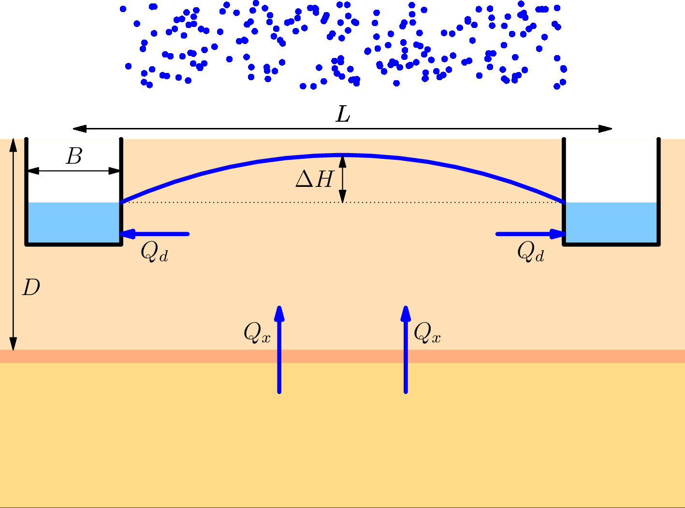
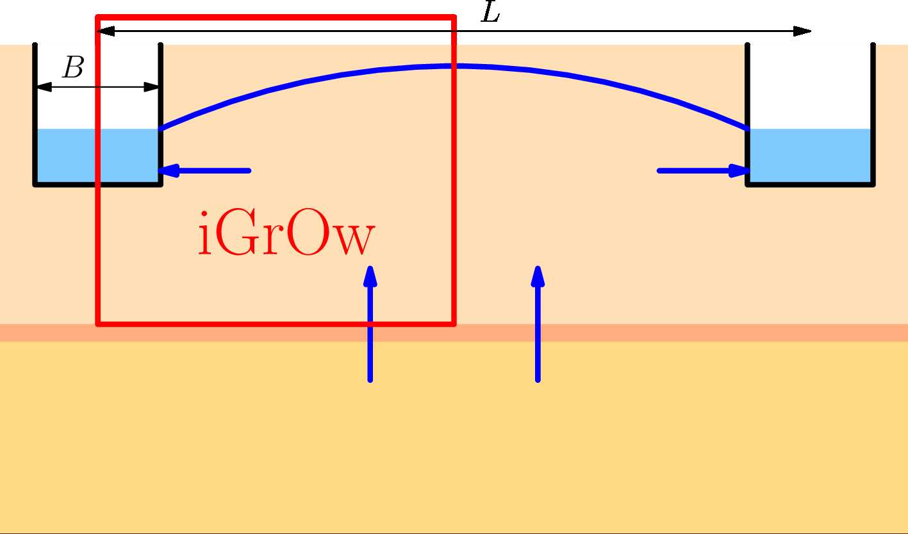
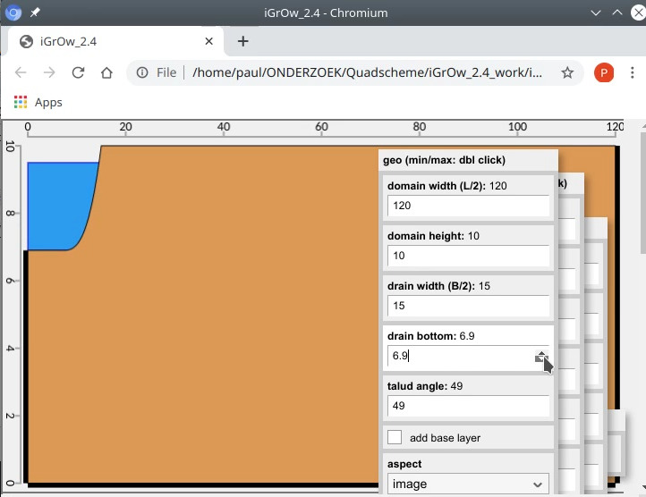
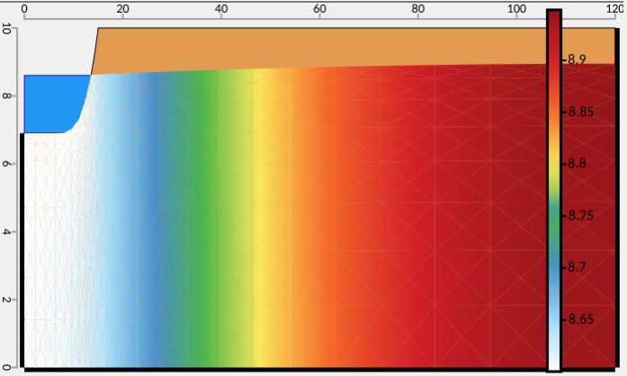
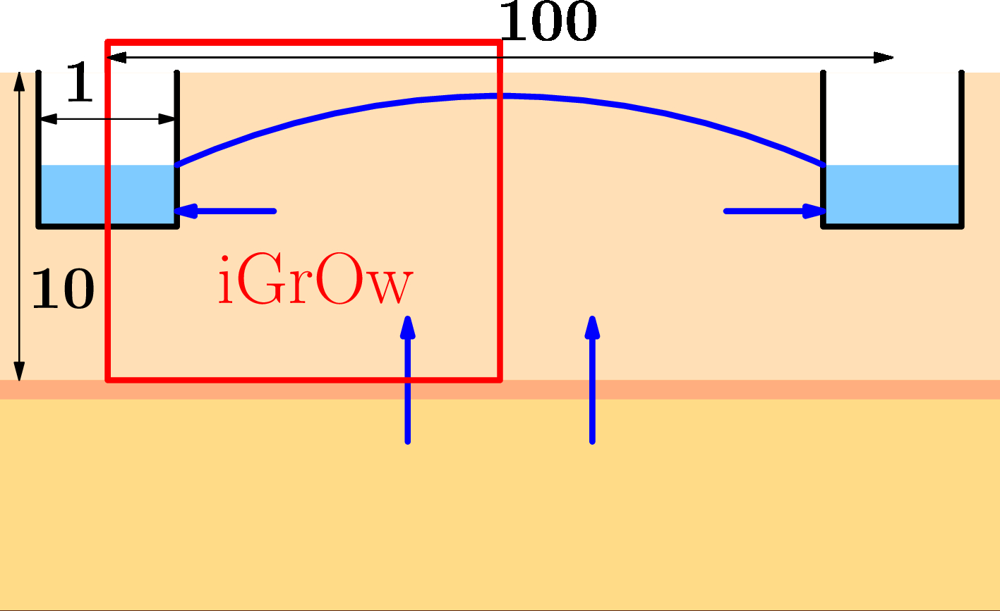
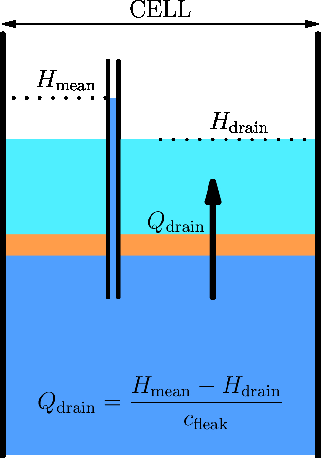
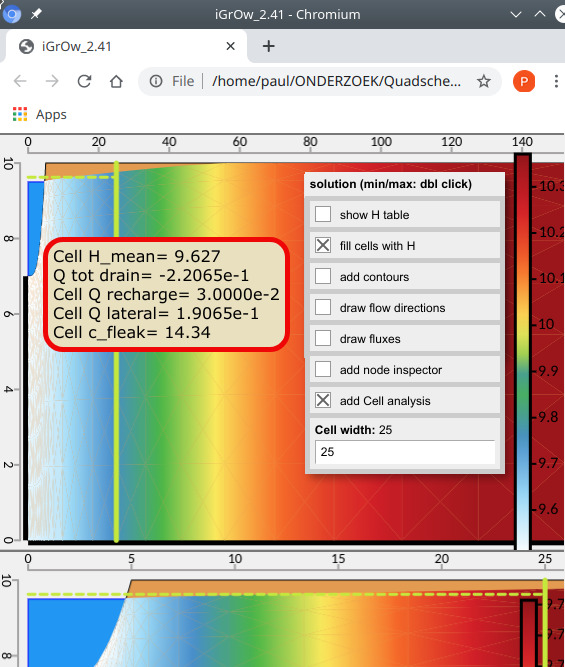
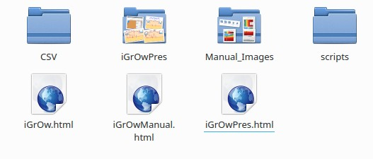

iGrOw
een html-app om over
interactie
tussen
Grondwater
en
Open
water
te denken en te piekeren
interactie schema:

freatische stroming in een vertikaal vlak
interactie schema iGrOw:

alleen maar 1 helft
een html app:

- html: opent en werkt in elke browser
- is daardoor zeer portabel
- interacties via muis en menus
- grafiek vernieuwt onmiddellijk
iGrOw = html-app voor i Gr Ow

iGrOw
- stroming door grond naar sloot\drain
- in vertikaal vlak
- links\rechts waterscheiding
(typisch: halve sloot\ half gebied)
- geen Dupuit (vol 2D)
- vrije grondwaterspiegel (=deel oplossing)
iGrOw: niet
- onverzadigde zone
- transient
- hellend
- niet uniforme k-waarden
- ....
Schematische plaatjes respecteren niet orde grootten:

iGrOw doet dit beter
iGrOw geeft meer dan 1 visie
iGrOw: zelfde oplossing, verschillende visies
iGrOw: parameters
-
wel alle belangrijke variaties
-
minimaal aantal parameters
-
(dus niet bv: variaties in k-veld)
iGrOw paramter voorbeeld: sloot vorm
iGrOw visualisatie oplossing
iGrOw cell: vergelijk met groffer schema
gele lijnen begrenzen cell
iGrOw cell: vergelijk met groffer schema


iGrOw in\output: ook getallen
iGrOw ↔ spreadsheet
iGrOw
pjjf.torfs@gmail.com
iGrOw.zip →
